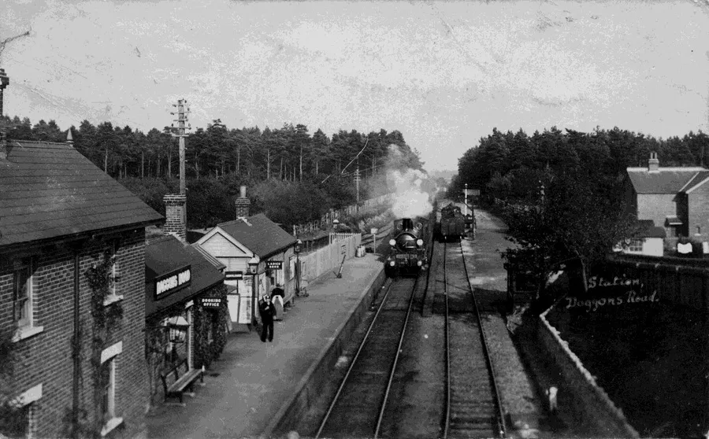
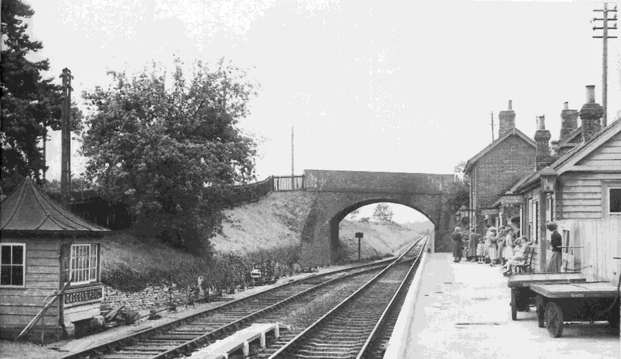
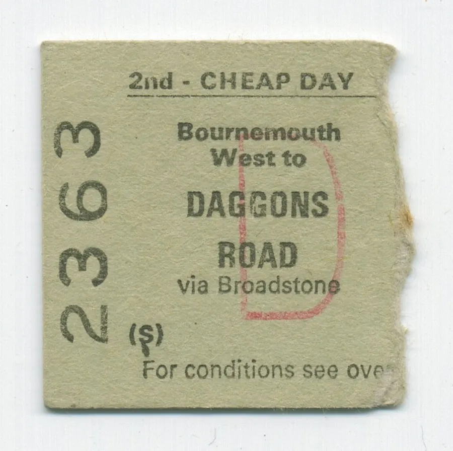
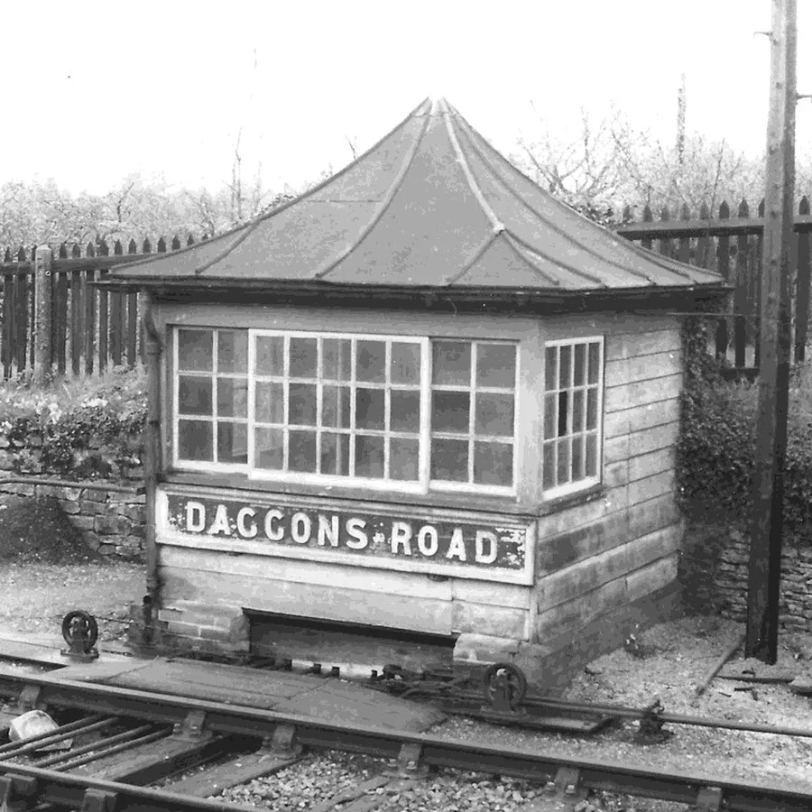
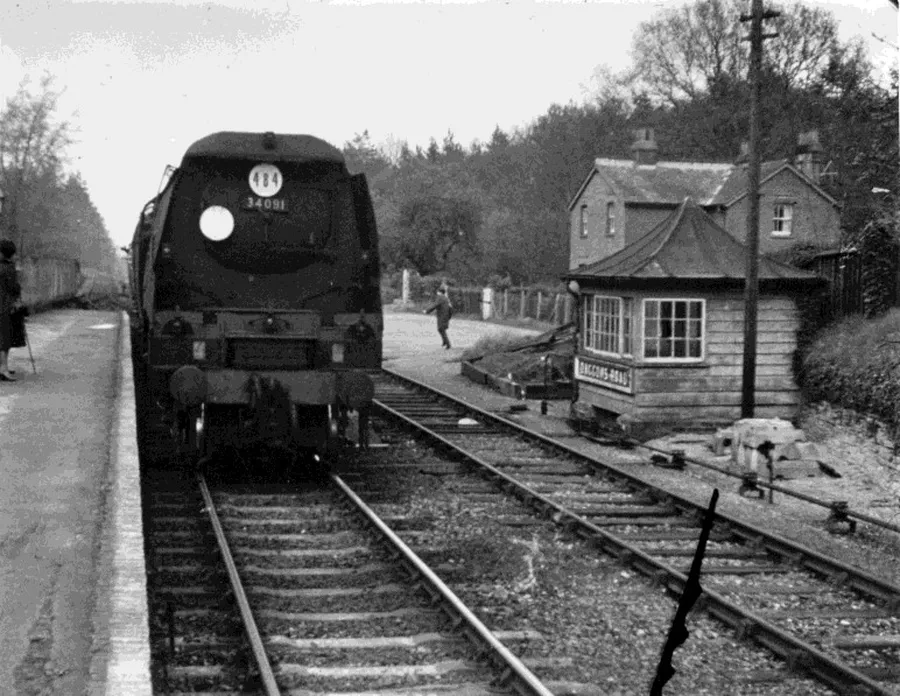
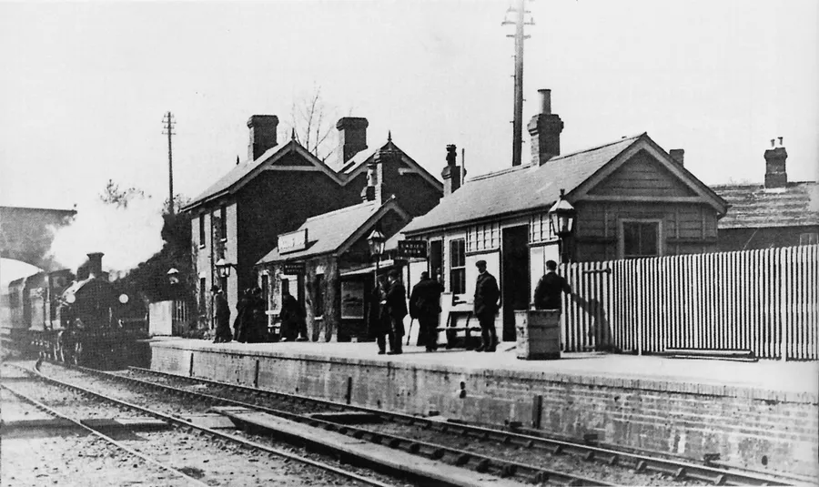
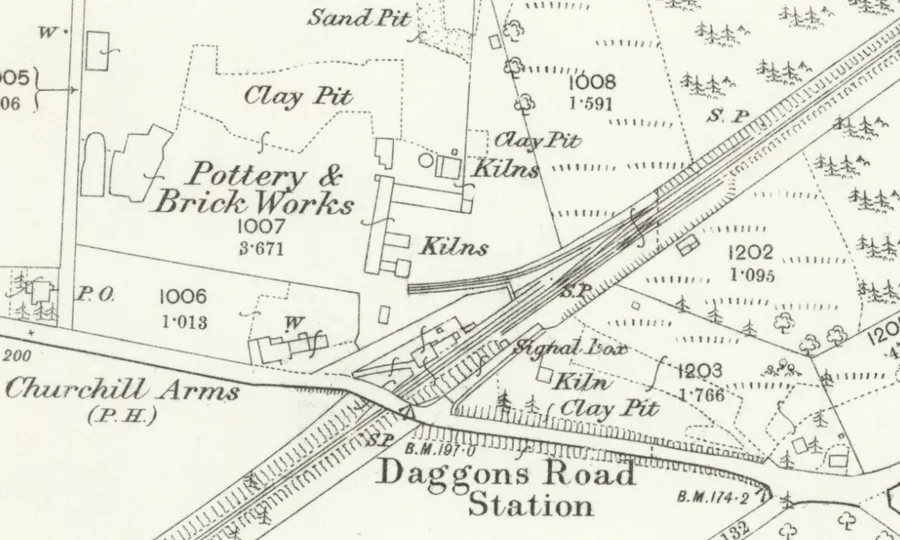

Daggons Road Station
by Adrian King

This was the station on the old Salisbury and Dorset line that served the village. The distance from Alderbury Junction was 11 miles and 21 chains.
It seems that it was not originally intended that a station should be built but Mr. George Onslow Churchill of Alderholt Park sold land to the company for the construction of the line only on the understanding that a station would be built. It was built in 1874 – 75 and opened 1st January 1876 eight years after the line was opened. Before this there had been years of lawsuits between the railway company and Mr. Churchill.

The road crossed the line by an over bridge to the southwest of the station. To the south the road is known as Station Road and changes to Daggons Road after crossing the bridge. During the 1980’s the bridge was removed when Churchill Close was built.
When it was first opened the station was in the middle of nowhere because the centre of the village was more to the northeast but subsequently over the years has grown towards the railway.
The station was opened as Alderholt but five months later in the year it was renamed Daggens Road so as not to cause any confusion with Aldershot in Hampshire. It is thought that military personnel may have turned up at the platform thinking that they had arrived at Aldershot. It was not known as Daggons Road until 1903 or 1904.

It was also known locally as ‘Paraffin Junction’ because there was no gas or electricity lights in the station.
The station originally consisted of a single platform 229 foot in length on the upside with one siding which was private and ran to the brickworks which at the time was operated by Eustance and Colley. A short second siding which ran from the private siding to a loading dock behind the platform had been added by 1901. There was a 374-foot head-shunt siding which ran parallel to the main line to the north.
There was eventually a third siding on the downside which served cattle pens and a coal yard. It was extended with points in May 1904 and converted into a down goods passing loop 430 foot in length with a head-shunt at its north end being 215 foot in length but the station was never used as a block post. The passing loop had a level access for Lorries.

The station building which included the station masters house was a two-storey double gabled brick building with single storey extensions but had no canopy at its north end.
The station building housed the booking office and waiting room. It was unusual that the station’s running in board was mounted on the roof of the booking office. It was later relocated to a pair of tall concrete stanchions in front of the booking office. A single storey timber building with a hipped slate roof stood further along the platform and this housed the ladies’ waiting room.
Between the two buildings there was a gents’ toilet. Behind the two station buildings there was another single storey building at an angle to the station. It was probably a goods or parcels office.

The Signal Box was unique in structure being a non-standard ground level box with a pointed pagoda style roof and was located alongside the down loop opposite the main station building at the north end of the platform. In August 1903 it was reduced to a ground frame and all signals apart from shunt signals, removed.
A siding was extended behind the station during the Second World War so that trucks could be shunted into the area of the ‘old brickyard.’ This enabled the Royal Army Ordnance Corp (RAOC) to move equipment into their workshops. The ‘old brickyard’ is now a housing estate.
Many used the station for transport to the Grammar Schools. The boys to Wimborne Grammar and most of the girls to Parkstone or Poole Grammar. Clifford Butler, Kenneth Porter, Derek Rake, Amanda Butler, Don Hibberd, and Nicholas Hood to name a few.

Don Hibberd used the station from 1936 – 43. He said
“The train for Wimborne left Daggons Road at 7.50 am and from Wimborne Station we had to walk a mile to school. The evening train left at 5.15 pm arriving at Daggons Road at 5.40 pm On Saturdays we had to attend school and would arrive back home at 2.15 pm”
The compiler was often taken on the train to have a haircut at Verwood. We returned to Purbeck on the train during the hard winter of 1962 – 63.
Station Masters were based at the station but after the Second World War became based at Fordingbridge overseeing the stations at Verwood, Daggons Road, Breamore, and Downton. There were Senior Station Porters tasked with General Duties from Office, Line, Yard Control and Passenger Care.

Watercress was transported to Covent Garden from the station.
Doctor Beeching closed the station with the line on 4th May 1964 because it was loss making. A residential cul-de-sac called Station Yard now occupies the land where the station once stood on the north side of Daggons Road.
It is hoped that the line will be designated a trail!

Station Masters, Porters and Patrolmen
| Charles Prangell Long | 1876 – 93 KC1885, 1889, KA1891 |
| Francis Clarke | KA1895 |
| Alfred Oliver | KA1903, 1907 |
| John George Lillington | KA1911 |
| Henry Ernest Gaiger | KA1915 |
| William Mark Tennant | KA1920, 1927 |
| Thomas Coombs *P | FA1933 |
| Fred Thorne *P | OaA p.140 |
| Albert H. Edsall *PM | NR1939 |
| Ronald Tague *P | OaA p.140 |
| Mr Tett *P | 1964 |
| * P-Porter, PM-Patrolman else assumed Station Master | |
| Date codes KA, KC, FA etc are from Kelly's Alderholt, Kelly's Cranborne and Fordingbridge Alamanac respectively | OaA - Otters and Alders by Donald Hibberd page 140 |